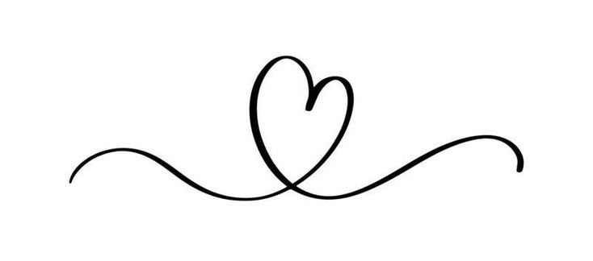

My parents

My father's name is Muhammad Yusof Bin Sulaiman and he was born in Marang, Kuala Terengganu. He was born on April 30, 1976. He married my mother in 2003 in October. My father is self employed. He is the best father in the world and a loving father. He always gives the best attention to his children. My father never neglected his children. My father can do anything especially carpentry and other works.
My mother's name is Azizah @ Azizan Binti Osman and was born in Dungun, Terengganu. He was born in 1971, February 25. My mother is a national high school teacher and teaches the subjects of History, Malay and Geography. She is the best mother in the world and a mother who always understands whatever her child's situation is. He always wants his children to be successful people in this world and in the hereafter. He always gave me advice to study hard and always gave encouragement and support for all his children to succeed. Every meal my mother cooks is always delicious and makes me miss home. No one can replace her and my mother never gave up under any circumstances. My parents are great parents and also the best example for my siblings and me. I love them so much. I want to give the best for them and make them happy. I don't want to disappoint my parents.
My Siblings


Muhammad Farhan Firdaus Binti Muhammad Yusof is my first younger brother. He was born at Kuala Lumpur Hospital in 2006, 06 February. He is 19 years old this year. He is still studying at a vocational college in Dungun, Terengganu for an electrical diploma. Next, my second younger brother is named Muhammad Farihin Firdaus Bin Muhammad Yusof. He is 17 years old this year. He also continued studying at the Vocational College in Dungun, Terengganu in the welding department. For the last younger brother and also my youngest brother, his name is Muhammad Hawari Iman Bin Muhammad Yusof and he is 9 years old. He is also still studying at SK Pusat Dungun. He likes cats. He is a sportsman at their school and plays football.